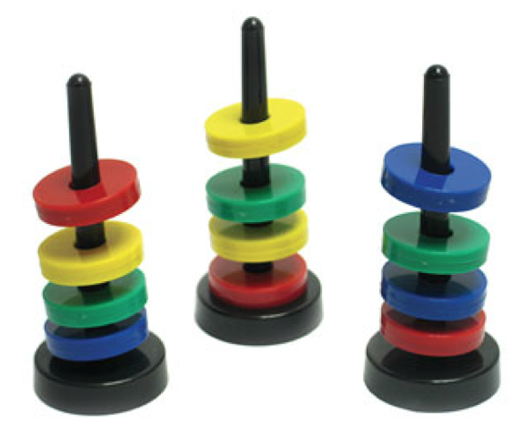

Ngăn xếp

1. Khái niệm
Ngăn xếp là dạng đặc biệt của danh sách tuyến tính, trong đó các đối tượng được nạp vào (push) và lấy ra chỉ từ một đầu được gọi là đỉnh (top) của danh sách
- Nguyên tắc: Vào sau - Ra trước (Last-in, First-out, viết tắc là LIFO)
- Các phép toán cơ bản với ngăn xếp:
+ push(object): bổ sung vào một phần tử, gọi tắt là nạp vào
+ pop(): loại bỏ và trả lại phần tử nạp vào sau cùng, gọi là lấy ra

- Các phép tooán bổ trợ:
+ top(): trả lại phần tử nạp vào sau cùng mà không loại nó ra khỏi ngăn xếp
+ size(): trả lại số lượng phần tử được lưu trữ
+ boolean isEmpty(): nhận biết có phản là ngăn xếp rỗng
- Ta xét hai cách tổ chức ngăn xếp:
+ Sử dụng mảng
+ Sử dụng danh sách liên kết
2. Mô tả
2.1 Ngăn xếp dùng mảng

Cách đơn giản nhất để cài đặt ngăn xếp là sử dụng mảng (S). Ta nạp các phần tử theo thứ tự từ trái sang phải. Có biến lưu trữ chỉ số của phần tử ở đầu ngăn xếp (N)
typedef DataType Item;
static Item *s;
static int N;
Click vào danh mục để hiện nội dung.
2.1.1 Khởi tạo ngăn xếp
void STACKinit(int maxN){
s = (Item *) malloc(maxN*sizeof(Item));
N = 0;
}
2.1.2 Kiểm tra ngăn xếp rỗng
int STACKempty(){
return N==0;
}
2.1.3 Thêm phần tử vào đầu ngăn xếp
void STACKpush(Item item){
s[N++] = item;
}
2.1.4 Lấy phần tử vào đầu ngăn xếp
void STACKpop(){
return s[--N];
}
2.2 Ngăn xếp dùng danh sách liên kết
Trong cách cài đặt ngăn xếp dùng danh sách liên kết, ngăn xếp được cài đặt như danh sách liên kết với các thao tác bổ xung và loại bỏ luôn làm việc với phần tử đầu tiên.
struct StackNode{
float item;
StackNode *next;
}
struct Stack{
StackNode *top;
}
Click vào danh mục để hiện nội dung.
2.2.1 Khởi tạo
Stack *StackConstruct() {
Stack *s;
s = (Stack *)malloc(sizeof(Stack));
if (s == NULL)
return NULL; // No memory
s->top = NULL;
return s;
}
2.2.2 Kiểm tra ngăn xếp rỗng
int StackEmpty(const Stack *s){
return (s->top == NULL);
}
2.2.3 Kiểm tra tràn ngăn xếp
int StactFull(){
printf("\n No memory! Stack is full");
getch();
return 1;
}
2.2.4 Nạp vào (Push)
Cần thực hiện các thao tác sau:
1. Tạo nút mới cho item
2. Móc nối nút mới đến nút ở đầu
3. Đặt nút mới thành nút dâu mới
int StackPush(Stack *s, float item){
StackNode *node;
node = (StackNode *)malloc(sizeof(StackNode)); //(1)
if (node == NULL){
StackFull() ;
return 1; // Train Stack: hết bộ nhớ
}
node->item = item; //(1)
node->next = s->top; //(2)
s->top = node; //(3)
return 0;
}
2.2.5 Lấy ra (Pop)
Thuật toán:
1. kiểm tra có phải ngăn xếp là rỗng
2. ghi nhớ địa chỉ của nút đầu hiện tại
3. ghi nhớ giá trị phần từ ở nút đầu
4. chuyển nút tiếp theo thành nút đầu mới (new top)
5. giải phóng nút đầu cũ
6. trả lại giá trị phần từ ở nút đầu cũ
float StackPop(Stack *s){
float item;
StackNode *node;
if (StackEmpty(s)){ //(l)
EmptyStack(); //can't pop
return NULL;
}
node = s->top; //(2)
item = node->item; //(3)
s->top = node->next; //(4)
free(node): //(5)
return item; //(6)
}
2.2.6 Đưa ra các phần tử của ngăn xếp
void disp(Stack* s){
StackNode* node;
int ct = 0; float m;
printf("\n\n DANE SACK CAC PEAR TU CUA STACK \n\n");
if (StackEmpty(s)){
printf("\n\n >>>>> EMPTY STACK <<<<<\n");
getch();
}
else{
node= s->top;
do{
m=node->item; printf("%8.3f ", m); ct++;
if (ct % 9 == 0) printf("\n");
node = node->next;
}while (!(node == NULL));
printf("\n");
}
}
2.2.7 Hủy ngăn xếp
void StackDestroy(Stack *s) {
while (!StackEmpty(s)){
StackPop(s);
}
free(s);
}
3. Chương trình minh họa
Click vào danh mục để hiện nội dung.
3.1 Sử dụng mảng
#include
#include
#define Max 100 //so phan tu toi da cua Stack
typedef int item; //kieu du lieu cua Stack
struct Stack
{
int Top; //Dinh Top
item Data[Max]; //Mang cac phan tu
};
void Init (Stack &S); //khoi tao Stack rong
int Isempty(Stack S); //kiem tra Stack rong
int Isfull(Stack S); //kiem tra Stack day
void Push(Stack &S, item x); //them phan tu vao Stack
int Peak(Stack S); //Lay phan tu o dau Stack nhung khong xoa
int Pop(Stack &S); //Loai bo phan tu khoi Stack
void Input (Stack &S); //Nhap Stack
void Output(Stack S); //Xuat Stack
void Init (Stack &S) //khoi tao Stack rong
{
S.Top = 0; //Stack rong khi Top la 0
}
int Isempty(Stack S) //kiem tra Stack rong
{
return (S.Top == 0);
}
int Isfull(Stack S) //kiem tra Stack day
{
return (S.Top == Max); //
}
void Push(Stack &S, item x) //them phan tu vao Stack
{
if (!Isfull(S))
{
S.Data[S.Top] = x; //Gan du lieu
S.Top ++; //Tang Top len 1
}
}
int Peak(Stack S) //Lay phan tu o dau Stack nhung khong xoa
{
return S.Data[S.Top-1]; //Lay du lieu tai Top
}
int Pop(Stack &S) //Loai bo phan tu khoi Stack
{
if (!Isempty(S))
{
S.Top --; //Giam Top
return S.Data[S.Top]; //Lay du lieu tai Top
}
}
void Input (Stack &S)
{
int n;
item x;
do
{
printf("Nhap so phan tu cua Stack (%d) :",Max);
scanf("%d",&n);
} while (n>Max || n<1);
for (int i=0; i=0; i--)
printf("%d ",S.Data[i]);
printf("\n");
}
int main()
{
Stack S;
Init(S);
Input(S);
Output(S);
int lua_chon;
printf("Moi ban chon phep toan voi DS LKD:");
printf("\n1: Kiem tra Stack rong");
printf("\n2: Kiem tra Stack day");
printf("\n3: Them phan tu vao Stack");
printf("\n4: Xoa phan tu trong Stack");
printf("\n5: Xuat Stack");
printf("\n6: Thoat");
do
{
printf("\nBan chon: ");
scanf("%d",&lua_chon);
switch (lua_chon)
{
case 1:
{
if (Isempty(S)) printf("Stack rong !");
else printf ("Stack khong rong !");
break;
}
case 2:
{
if (Isfull(S)) printf("Stack day !");
else printf ("Stack chua day !");
break;
}
case 3:
{
item x;
printf ("Nhap phan tu can chen vao DS: ");
scanf("%d",&x);
Push(S,x);
break;
}
case 4:
{
Pop(S);
break;
}
case 5:
{
Output(S);
break;
}
case 6: break;
}
}while (lua_chon !=6);
return 0;
}
3.2 Sử dụng danh sách liên kết
#include
#include
typedef int item; //kieu du lieu
struct Node
{
item Data; //du lieu
Node *Next; //link
};
typedef struct Stack
{
Node *Top;
};
void Init (Stack &S); //khoi tao Stack rong
int Isempty(Stack S); //kiem tra Stack rong
int Len (Stack S); //Do dai Stack
void Push(Stack &S, item x); //them phan tu vao Stack
int Peak(Stack S); //Lay phan tu o dau Stack nhung khong xoa
int Pop(Stack &S); //Loai bo phan tu khoi Stack
void Input (Stack &S); //Nhap Stack
void Output(Stack S); //Xuat Stack
Node *MakeNode(item x); //Tao 1 Node
void Init (Stack &S) //khoi tao Stack rong
{
S.Top = NULL;
}
int Isempty(Stack S) //kiem tra Stack rong
{
return (S.Top == NULL);
}
int Len (Stack S)
{
Node *P = S.Top;
int i=0;
while (P != NULL) //trong khi chua het Stack thi van duyet
{
i++;
P = P->Next;
}
return i;
}
Node *MakeNode(item x) //tao 1 Node
{
Node *P = (Node*) malloc(sizeof(Node));
P->Next = NULL;
P->Data = x;
return P;
}
void Push(Stack &S, item x) //them phan tu vao Stack
{
Node *P = MakeNode(x);
P->Next = S.Top;
S.Top = P;
}
int Peak(Stack S) //Lay phan tu o dau Stack nhung khong xoa
{
return S.Top->Data;
}
int Pop(Stack &S) //Loai bo phan tu khoi Stack
{
if (!Isempty(S))
{
item x = S.Top->Data; //luu lai gia tri
S.Top = S.Top->Next; //Xoa phan tu Top
return x;
}
}
void Input (Stack &S) //nhap danh sach
{
int i=0;
item x;
do
{
i++;
printf ("Nhap phan tu thu %d : ",i);
scanf("%d",&x);
if (x != 0) Push(S,x);
} while(x != 0); //nhap 0 de ket thuc
}
void Output(Stack S)
{
Node *P = S.Top;
while (P != NULL)
{
printf("%d ",P->Data);
P = P->Next;
}
printf("\n");
}
int main()
{
Stack S;
Init(S);
Input(S);
Output(S);
int lua_chon;
printf("Moi ban chon phep toan voi DS LKD:");
printf("\n1: Kiem tra Stack rong");
printf("\n2: Do dai Stack");
printf("\n3: Them phan tu vao Stack");
printf("\n4: Xoa phan tu trong Stack");
printf("\n5: Xuat Stack");
printf("\n6: Thoat");
do
{
printf("\nBan chon: ");
scanf("%d",&lua_chon);
switch (lua_chon)
{
case 1:
{
if (Isempty(S)) printf("Stack rong !");
else printf ("Stack khong rong !");
break;
}
case 2:
{
printf("Do dai Stack: %d",Len(S));
break;
}
case 3:
{
item x;
printf ("Nhap phan tu can chen vao DS: ");
scanf("%d",&x);
Push(S,x);
break;
}
case 4:
{
Pop(S);
break;
}
case 5:
{
Output(S);
break;
}
case 6: break;
}
}while (lua_chon !=6);
return 0;
}
4. Bài tập tự làm